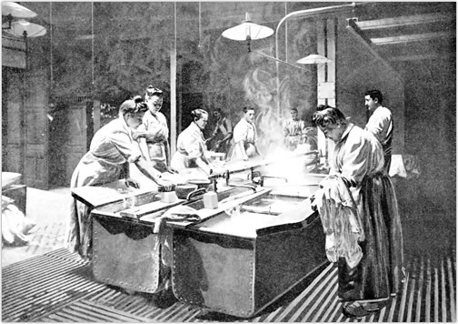

Can laundry industry change?
08 April 2015
Have you ever thought of why the laundry industry evolves so slowly? Why do we have big branded franchise businesses on every corner? Starbucks coffee shops, McDonalds restaurants, BestBuy electronic stores, AMC or Regal theaters, Wallmart chains etc. - every industry possible has been modernized, incorporated, revolutionized and acquired. Every industry but the laundry one.
These days we can see the opposite dependency. When it comes to restaurants, people wish there were fewer franchise/corporate food chains and restaurants and more cool one of a kind experiences and family businesses. For that reason people value Downtown Brooklyn or Williamsburg more for its unique experience.
Not something we wish to have when it comes to laundry. We don't want to have Mexican style laundry to go for a try once a year. We need a quality place that we can trust with our garments day over day, week over week, and in the rare cases when we are happy to find one, we have to look for another one simply because we have to move (the average New York real estate turnover is 2 years).
Kim's laundry, N Street cleaners, Joe's Laundromat - these are the places we have to choose from. And huge luck if someone speaks proper English on the phone or in person.
As against having our personal hair stylist whom we visit once a month or family doctor we visit a few times a year, laundry isn't something we wish to drag around or even travel with to your favorite spot uptown, so we are forced to settle on local options within a few blocks reach. In cases like this, having a franchise laundry shop on every corner that maintains the same quality throughout them all would be a dream.
Like Domino's Pizza, wherever you go, you can always find one in the area, and if you are too lazy to leave your apartment, they will deliver it to you for a fee. Plus Domino's is the same every time we have it. Perfect, isn't it? So if someone asks you what you think about Domino's, you won't ask which one, but most probably have an opinion about them all, as if it were to be just one restaurant.
This is what today's laundry and dry cleaning industry looks like:
- It is either a small dark dingy family cleaners shop (mostly non english speaking) with a few washers hidden at the back - or dirty laundromats with 40 year-old equipment living its last days occupied by not so pleasantly looking customers, most probably residents of the street.
- A third option came up recently - laundry and dry cleaning services on demand. With the mobile market boom there have been more and more services on demand offering seamless ordering with pickup and delivery. We have talked about it here before.
Even though the third option seems to be an upgrade / revolution on the laundry market, those services don't live long and have very high turnover despite their ancient rivals. 
Why?
The laundry industry has always been and will in the near future be a very low margin business. People are used to paying less for their laundry, and with so much competition around with prices below common sense new businesses have to compete with them. Considering that mostly family owned places don't need to pay official salary or hourly rate, especially if places are mostly run by illegal immigrants, it's incredibly hard to survive.
The second reason is a battle against a stone wheel. When you come to complain about shrunk $500 pants to a place where the receptionist only understands the words "wash" and "how much", there is no point in trying to explain the problem and expect something in return - these places always have an "AT YOUR OWN RISK" policy by default, it's the unwritten law. They have no Yelp page to write complains on, nor any proof of transaction; all receipts are handwritten and can easily be discarded.
With English-speaking businesses management on site and valuable reputation on Yelp create a completely different story. Since it's service industry, customers expect every little floss to be taken care of, arguments like "why was my dry cleaning jacket ruined" and answers like "it should have been sent to dry cleaning instead of regular wash" won't work, and you will most probably gain a one star Yelp review unless you reimburse $300 for the jacket. Add a low cost expectancy for services, high rent, and huge competition, and the success rate goes down exponentially.
Another reason why online reviews can't be trusted when it comes to laundry services is low number of people writing about their good experiences. When you come to a good restaurant with your friends, it is social networking that makes it fun to share pictures and reviews of food and fun (i still don't completely understand what's fun about it), but who would want to share a picture of perfectly folded shirt or review to the world how someone cleaned yellow and brown stains in the front and back of their underwear? Even though it sounds funny, it is pretty much true. The only reason why people post reviews on such services is to put pressure on their management or out of anger and unfulfiled expectations.
What we can do to make revolution happen sooner is not expect to keep paying low prices for laundry and cleaning services, not expect miracles to happen, reward good services with good honest reviews, recommend them to friends, and always give them a chance to fix an issue if one rises, and not try to take advantage of it trying to collect double value of damaged items or do things out of anger. We all know how it feels to lose a favorite garment, so when that happens just remember how many times have you shrunk something yourself.